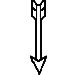

Cris design


<section class="design">
  <div class="panel-design">
    <button class="panel-title">DISEÑO
      
    </button>
  </div>
  <div class="open-panel">
    <label>
      <input type="radio" name="background" value="papiro"> Papiro
    </label>
    <label>
      <input type="radio" name="background" value="piedra"> Piedra
    </label>
    <label>
      <input type="radio" name="background" value="metal"> Metal
    </label>
  </div>
</section>